10. WebサーバへPlaybook実行¶
10.1. ファイル管理のキーペアを変更¶
ITAに「インフラ管理者」でログインする
Tip
実行者：インフラ管理者ユーザー名：infra-adminパスワード：passwordメインメニューの「Ansible共通」アイコンを押下する
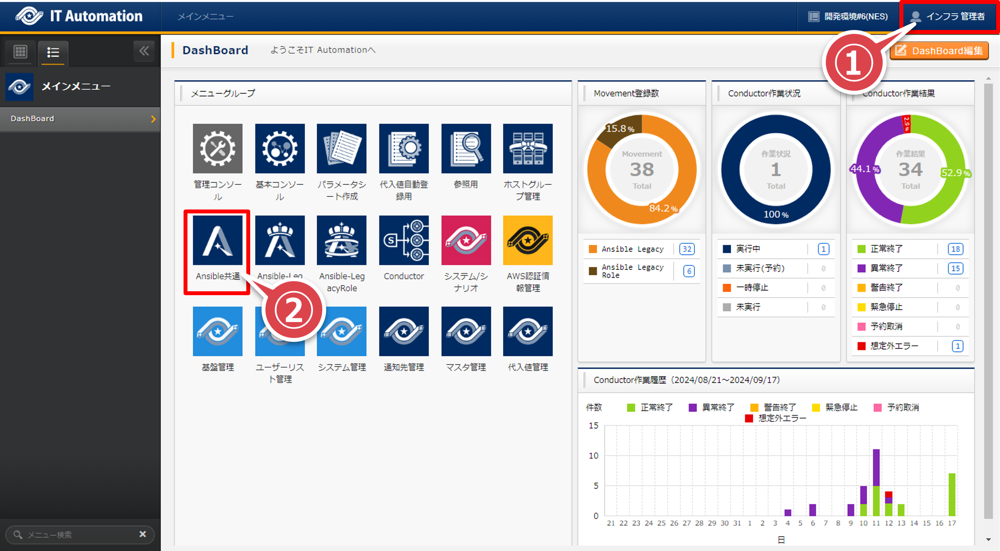 「ファイル管理」へ移動して「フィルタ」ボタンを押下する
「ファイル埋込変数名」が”CPF_KEY_PAIR_BASTION”と”CPF_KEY_PAIR_WEB”のレコードをチェックして「編集」ボタンを押下する
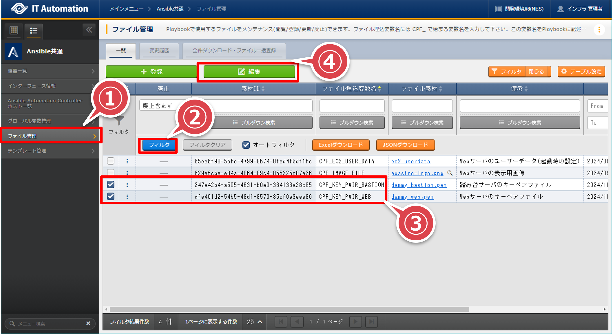 「ファイル埋込変数名」が”CPF_KEY_PAIR_BASTION”のレコードの「ファイル素材」をクリックする
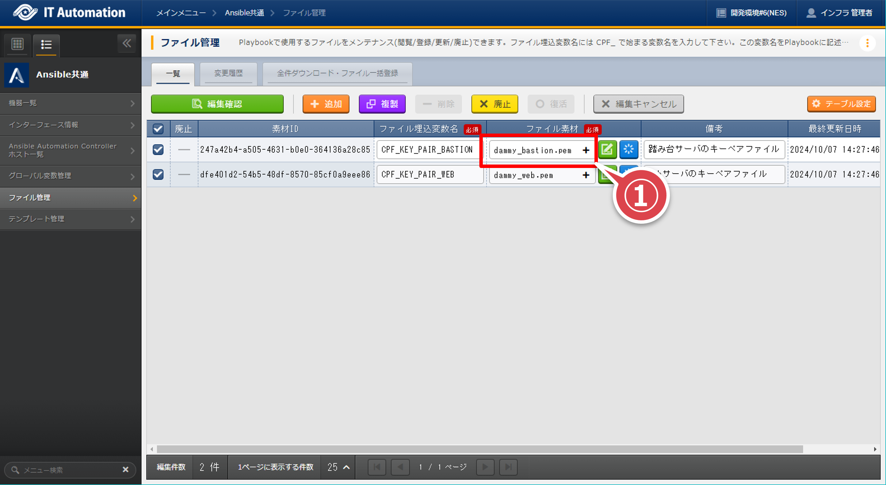 ファイル選択のダイアログで「1stモデル導入手順/AWS環境設定」の②で取得した「踏み台サーバ」のキーペアファイルを選択して「開く」ボタンを押下する

「ファイル埋込変数名」が”CPF_KEY_PAIR_WEB”のレコードの「ファイル素材」をクリックする
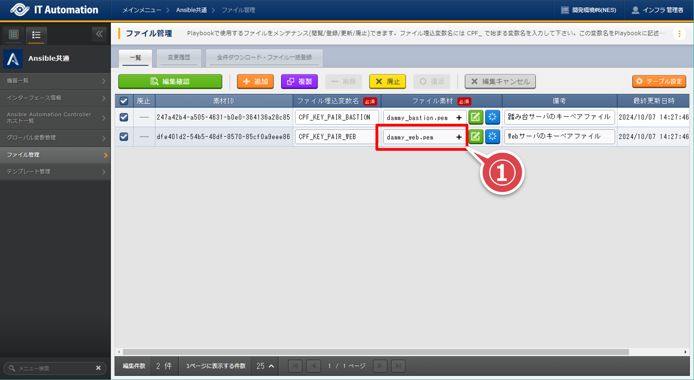 ファイル選択のダイアログで「1stモデル導入手順/AWS環境設定」の②で取得した「Webサーバ」のキーペアファイルを選択して「開く」ボタンを押下する
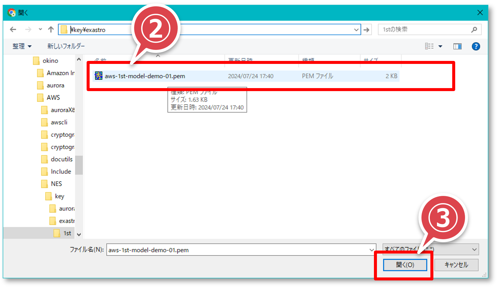 「編集確認」ボタンを押下する
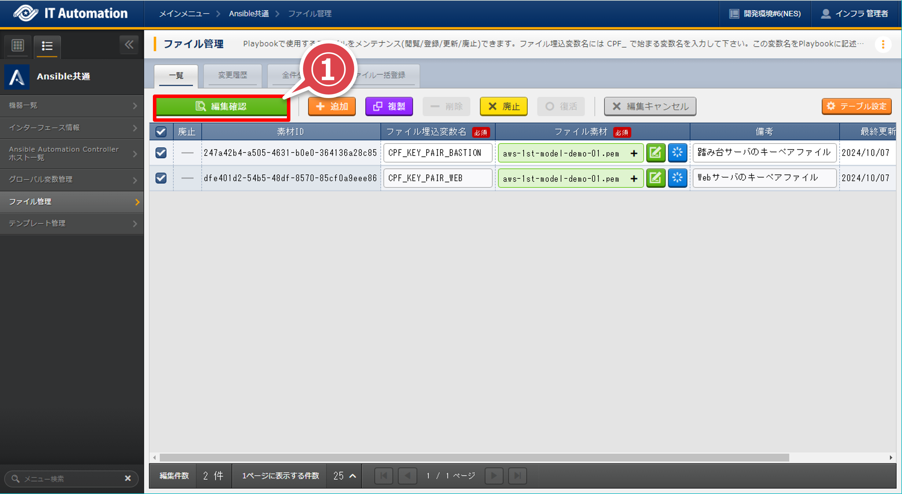 「編集確認」ポップアップ画面の「編集反映」ボタンを押下する
{kind=link}
{kind=link}
{kind=link}
{kind=link}
{kind=link}
{kind=link}
10.2. Conductor実行¶
ITAに「インフラ管理者」でログインする
Tip
実行者：インフラ管理者ユーザー名：infra-adminパスワード：passwordメインメニューの「Conductor」アイコンを押下する
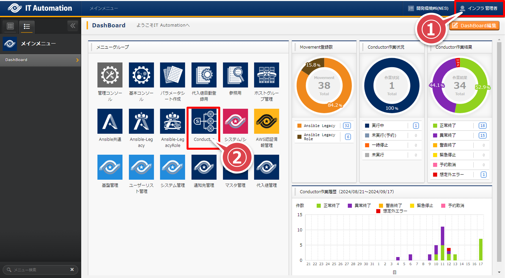 - 「Conductor一覧」画面の「Conductor名称」が”WebサーバへPlaybook実行”のレコードの「詳細」ボタンを押下する。フィルタの「Conductor名称」で検索すると間違いがない
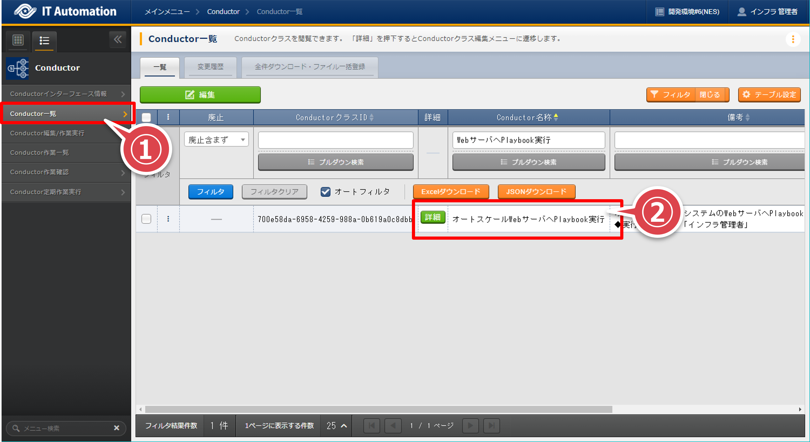 「Conductor編集/作業実行」画面の「作業実行」ボタンを押下する
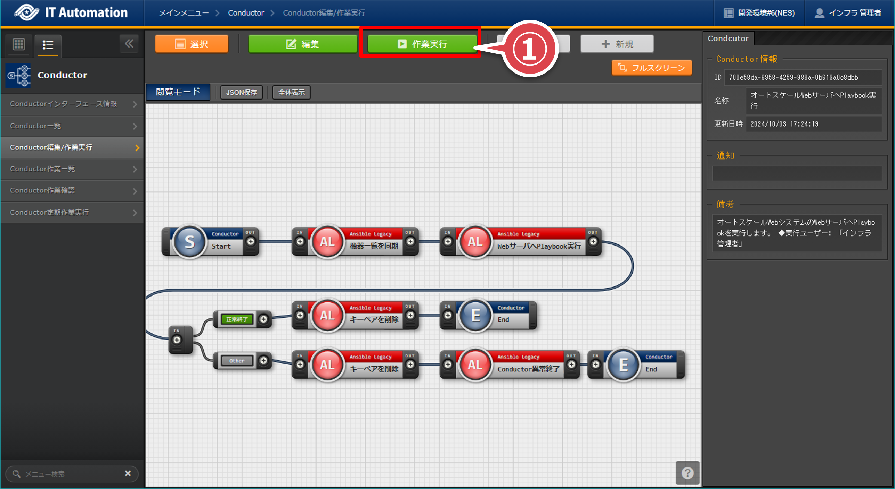 「作業実行設定」ポップアップ画面の「オペレーション選択」ボタンを押下する
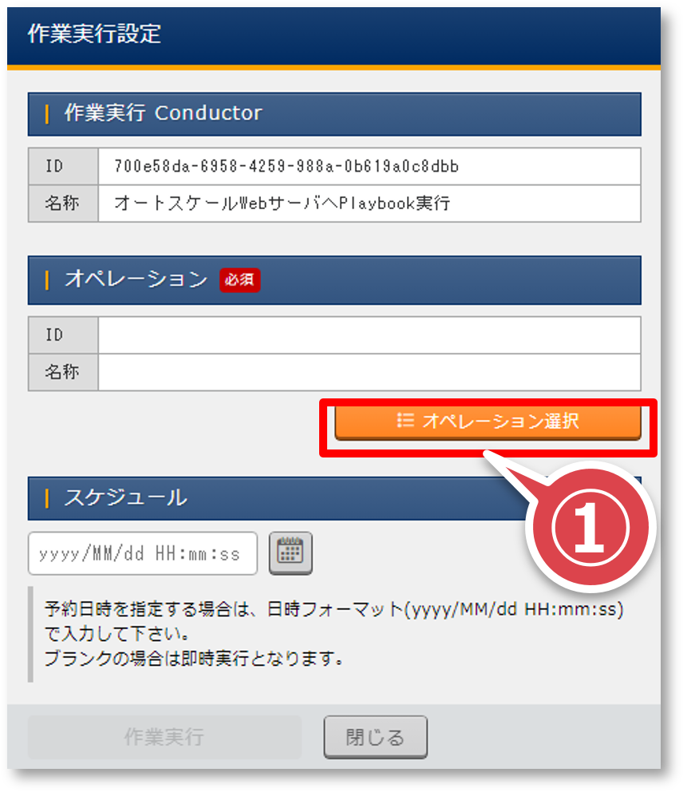 「オペレーション選択」ポップアップ画面の”環境A(1stモデル)”のレコードを選択して「選択決定」ボタンを押下する
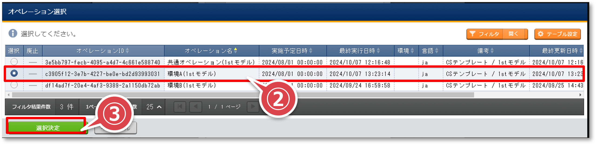 「作業実行設定」ポップアップ画面の「作業実行」ボタンを押下する
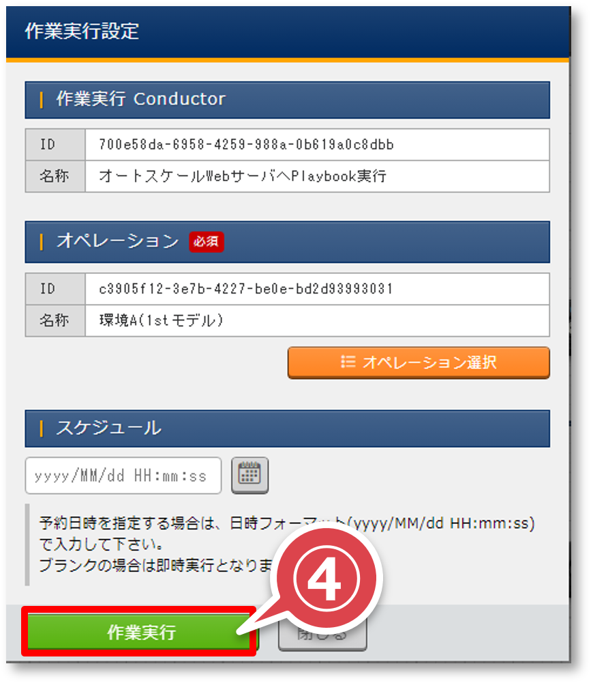 ステータスに「正常終了」が表示されることを確認する
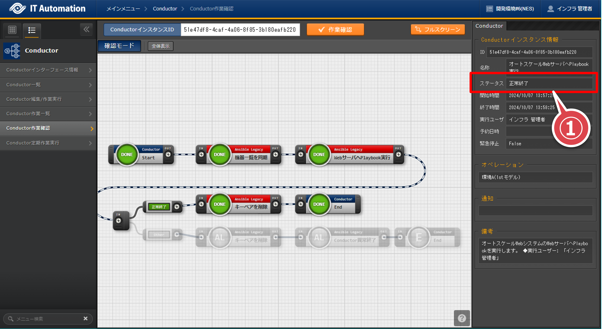
{kind=link}
{kind=link}
{kind=link}
{kind=link}
{kind=link}
{kind=link}
{kind=link}
10.3. Webページの確認¶
ブラウザのアドレスバーに「AWSリソースの確認(Conductor実行後)」の（※3）でメモしたELB DNS名を張り付けてEnterキーを押下する
下図の画面に画像が表示されることを確認する
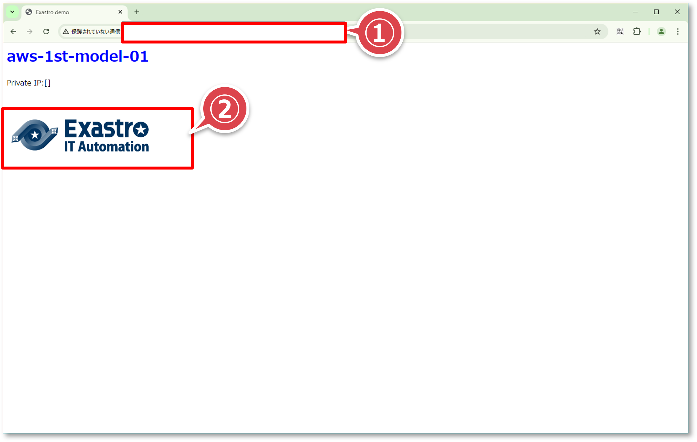
{kind=link}